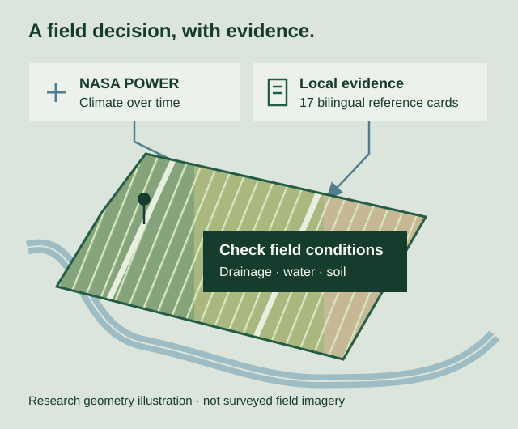
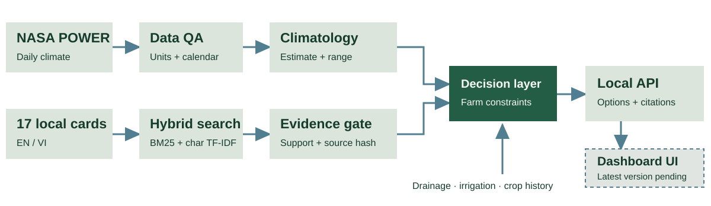

ArgoTwin
NASA data for
crop-rotation decisions.
Challenge: Field Shift
- Lê Nguyễn Gia Hưng
- Huỳnh Quốc Việt
- Nguyễn Thanh Hằng
- Võ Thị Ngọc Bích
- Nguyễn Hoàng Quang Luật

A crop choice
needs context.
A farmer considering a change
after a rice harvest.
Rain alone cannot establish
whether a field can support a crop.
The decision needs evidence
and visible information gaps.
Explore the options.
See the conditions.
Placeholder for Hưng’s latest build
NASA is the
climate backbone.
retained months
Jan 1984 – Oct 2026
Rainfall · temperature · humidity
24 months: Nov 2024 – Oct 2026 · regional grid estimates
Nominal coverage 80%; diagnostic rainfall coverage 67.7%.
Intervals are not guaranteed; this is not a daily forecast.
Two blocks.
One checked decision.

Climate method: seasonal mean climatology + empirical residual intervals.
RAG method: BM25 + character TF-IDF → support / hash checks → cited extractive answer or refusal.
Test the answer.
Keep the limits.
Evidence that can be inspected.
Benefits that still need field testing.
unsupported questions
correctly declined
Small analyst-authored final set:
8 supported + 8 unsupported questions.
Two unsupported questions still passed.
Reused 2018–2025 diagnostic against POWER.
Not an independent field test.
Intended value: clearer rotation discussions.
Water savings, yield and profit have not been measured.
Integrate. Validate.
Then pilot.
NASA data.
A decision people can question.